2026-10-15 · 现场 UI 审查 · 改版方案待确认
改版后的内容排布
下图说明信息如何组织。当前产品页面保持原样。
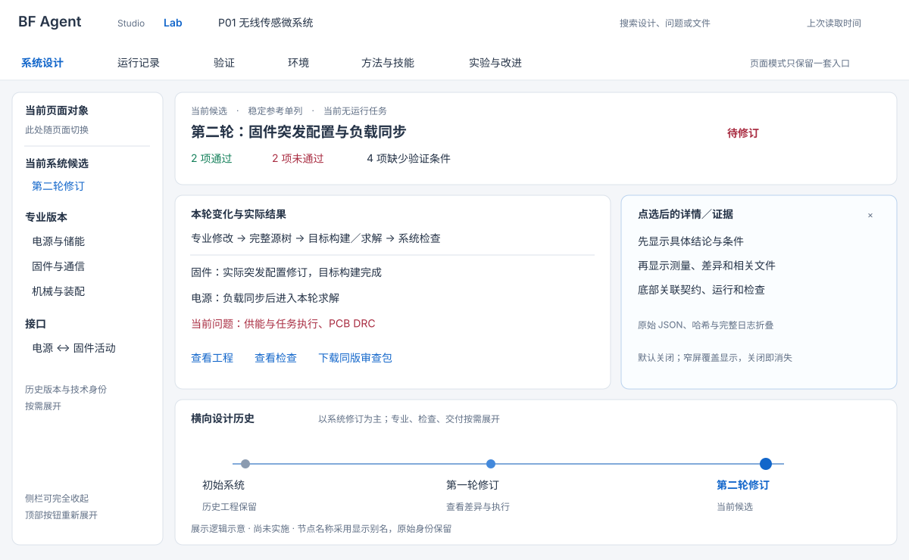
Lab UI 审查与改版方案
审查日期：2026-10-15。对象：http://127.0.0.1:8768/lab 的六个页面、关键详情、工程预览和横向历史。检查窗口：1280×720、1024×768、1440×900。
主要问题：页面按照内部数据对象排版，缺少面向用户的阅读顺序。当前版本、实际问题和下一项工作，被哈希、重复记录及过密的卡片掩盖了。优先修正状态与统计，再整理导航、详情和布局。
本报告包含改版方案和验收条件；当前页面尚未修改。
1. 当前页面应该首先讲清的事实
| 用户要知道什么 | 当前事实 | 建议显示 |
|---|---|---|
| 正在看哪个设计 | 当前提交 SC-e8f2f2e5…；当前采用 SC-4c0da605… | 第二轮供电／固件修订；旁边单列“稳定参考” |
| 这一版如何 | 核心检查 2 通过、2 未通过、4 缺少验证条件 | 以这 8 项作为版本验收汇总 |
| 主要卡点 | 供能与任务执行、PCB DRC；器件／接口／模型／装配资料缺口 | 直接列问题名称和具体原因，点击看测量与证据 |
| Agent 现在是否工作 | 原 Lead、Power、Firmware 均已停止执行；另外两个未执行任务仍显示“已排队” | 当前无运行任务；历史及未启动任务收起 |
| 能看什么 | 原理图、PCB、CAD 预览均可打开；同版审查包存在 | 工程预览、检查结论、交付下载三个明确入口 |
版本名称是建议的显示别名，底层提交身份和账本保持原样。
2. 六个页面的审查结果
| 顺序／页面 | 健康度 | 实测问题 | 改进后的首屏 |
|---|---|---|---|
| 1 系统设计 | 需重排 | 四列流程、四个专业、候选、六步验收同时争抢空间；专业卡只统计最后一次声明的 1 项变化，未体现整轮源码修改 | 当前候选、相比上轮的实际变化、接口和验收摘要；底部横向版本历史 |
| 2 运行记录 | 需重排 | 操作回执直接称为 Decision Episodes；每条堆长理由、哈希和调用状态；详情展开后 Agent 名称被挤成多行 | 按设计轮次与工程任务分组，显示谁、做什么、得到什么结果 |
| 3 验证 | 优先修正 | 8 项核心门与 4 条复查记录合计为 12 项，显示 4 通过／4 失败；同类契约重复出现 | 当前 8 项有效结论；复查历史另开，不计入当前完成数 |
| 4 环境 | 需修正 | 三栏中的五列表格过窄，ARM_GCC 等名称断成多行；执行资格部分由前端固定规则推断 | 按机械、EDA、SPICE、固件列能力，给出实际版本、最近调用、结果及阻塞 |
| 5 方法与技能 | 需修正 | 顶部只显示最后一个 H 哈希，底部实际存在不同 Agent 的不同 H；技能目录、加载和激活混在长列表 | 按 Agent 查看实际方法与本轮技能；完整技能库单独展开 |
| 6 实验与改进 | 应简化 | 尚无注册实验，却占用多个空卡片；两个方法配置被画成谱系；开发活动计数放在 Findings 下 | 实验准备状态、真实比较记录；方法配置和有亲缘依据的谱系分别显示 |
当前浅色风格、Studio／Lab 入口、矢量图标、原生工程查看器和横向历史可以继续使用。
3. 具体问题、原因和措施
P0：先修正用户会读错或点不动的地方
| 问题 | 当前证据／原因 | 具体改动 | 验收条件 |
|---|---|---|---|
| 验收数量重复 | validationRecords() 将 8 个当前门和 4 条检查回执直接拼接；validationPage() 对整个集合计数 | 当前资格按核心门汇总；接口检查按检查类型取当前有效记录；历史保留在历史区 | 当前版本首屏显示 2／2／4；历史增加不改变完成数 |
| 契约列表与详情状态冲突 | 列表读最新检查为“通过”；详情读契约本体 status，显示“未检查” | 契约详情同时表达“契约版本”与“本候选下的检查结果”，后者与列表使用同一来源 | 同一对象在卡片、列表、详情显示相同检查状态与范围 |
| 失败详情没有原因 | 供能门详情只展示 power_load_chain、摘要和绑定字符串，缺少实际结果 | 默认显示结论、关键测量、条件、具体问题和报告链接；哈希移到来源区 | 点“供能未通过”直接看到问题和本轮测量，继续一击打开完整证据 |
| 验收表格行点击无响应 | 行含 data-kind，点击处理器只接受 button,[data-preview],[data-cad]；现场点行未打开详情 | 表格内增加真正的详情按钮／链接，支持键盘 | 鼠标和 Enter 都能打开对应检查 |
| 执行成功与工程结论混淆 | 运行卡采用操作的 SUCCEEDED，实际检查结果可能是 FAIL | 分开显示“调用已完成”和“工程结果：未通过”，主要强调工程结果 | 检查完成但失败的卡片不会只剩一个绿色成功标签 |
| 环境与方法状态靠固定文案 | exercised() 对 SPICE/CAD 返回“复用基线结果”；策略卡和加载卡包含固定 ACTIVE/PASS | 由对应能力回执、实际执行和所选 Agent 的加载记录产生状态；显示作用范围与时间 | 目标构建、SPICE 本轮执行、基线复用、未开放写入能分别对上实际记录 |


P1：建立清楚的阅读模型
| 问题 | 具体改动 |
|---|---|
| 所有页面共用同一组专业分支和集成链接 | 六个页面保留一套主导航；侧栏只列当前页面对象：专业、运行、检查、工具、方法或实验 |
| 哈希成为主要标题 | 主标题使用工程目的或现有公开理由的简短摘要；次行显示类型、时间、状态；技术 ID 在来源区复制、检索 |
| 默认详情仍是 JSON 和长段原文 | 按对象类型排版：契约用对照表，提交用文件差异，运行用行动与结果，检查用条件和测量，技能用用途和实际使用；JSON 放“原始记录” |
| 操作日志冒充决策片段 | 先按轮次／任务分组；一组包含公开问题、实际修改、执行和结论；工具调用是可展开的子项 |
| 全项目费用与单次运行混排 | 显式提供“本轮／本会话／项目累计”范围；请求数与费用卡、明细表共同使用该范围 |
| 每页都出现同一个 P01 电源问题横幅 | 系统／验证显示工程问题；运行显示本轮目标；环境显示能力故障；方法显示当前配置；实验显示研究问题 |
| 历史只取最近 24／67 项 | 默认展示有意义的系统修订，检查修正与声明提交折叠；增加更早记录入口，保留横向轨道和父子关系 |
| 方法配置列表看起来像已验证谱系 | 没有父代、补丁和采用依据时显示并列配置；有真实关系后再画谱系与收益 |
命名示例：
| 现在的首要文字 | 建议首要文字 | 技术身份的位置 |
|---|---|---|
SC-e8f2f2e5 | 第二轮：固件突发配置与负载同步 | 次行“系统候选”＋可复制 ID |
DC-5c402446 | 固件：源码修订及接口声明 | 差异和来源中列提交、父版本与构建 |
IC-e3624668 | 电源与固件活动契约 · 第 3 版 | 绑定信息中保留完整契约 ID |
power_load_ | 供能与任务执行 | 原始字段名放来源区 |
H-50a2d092b | Power／Firmware 当前执行配置 | 配置摘要后显示方法身份 |
别名从已有事实与公开理由生成；没有标题时允许补一个显示名称，不改写原始记录。
P2：布局与交互整理
- 列宽随主工作区变化。 1024 窗口中运行正文为 11px，Agent 卡名称和请求数被反复断行。右侧详情默认抽屉打开；主区不足时覆盖显示，关闭后完全消失。
- 侧栏完全收起。 用顶部按钮重新展开，不留一排细栏。宽度偏好与详情状态按页面保存。
- 减少同级卡片和边框。 每页一块主要工作区域；辅助信息折叠。正文建议 14px，元信息 12px，标题 20–24px；英文技术名按单词断行。
- 图纸提供缩放和平移。 原理图适屏后器件文字太小；PCB 默认图也缺少局部定位。共用查看器增加适屏、100%、放大、缩小、拖动和器件／网络定位；CAD 沿用已有旋转缩放。
- 固定返回位置。 切页和展开详情引发布局重排，时间轴选中项会离开视野。页面、对象、候选、过滤器和滚动位置一起恢复；路由名与 select#system 的锚点重名一并处理。
- 明确更新时间。 “Synced”改成上次读取时间，同时显示最新工程事件时间；断流时保留最后视图和提示。
- 补键盘语义。 页面导航设置 aria-current；选项卡表达当前选中；弹窗关联标题；表格用可聚焦按钮。避免把整页重新渲染都放入实时播报区。
- 搜索给出范围与结果。 当前实现匹配 JSON.stringify，用户难以知道为何命中。优先检索名称、问题和文件，提供结果数、清空和无结果提示，ID 检索继续保留。
4. 修改后的整体展示逻辑
顶部：Studio / Lab ｜ 项目 ｜ 搜索 ｜ 数据更新时间 模式：系统设计 ｜ 运行记录 ｜ 验证 ｜ 环境 ｜ 方法与技能 ｜ 实验与改进 左侧：当前页面对象 中间：当前任务与主要工作 右侧：点选后的详情 专业 / 轮次 / 检查 当前版本、真实变更、结果、工程视图 条件、对照、证据 按页面切换 一次围绕一个问题阅读 默认关闭，可完全收起 底部：横向设计历史 ｜ 系统修订为主，专业提交／检查／交付按需展开
默认阅读顺序：现在采用什么 → 这一轮改了什么 → 实际结果如何 → 问题在哪里 → 查看工程／证据。
Studio 继续承担用户对话和工程查看；Lab 承担设计组织、执行复盘、验收和实验。两者共用预览与结果组件。
各页应展示什么
| 页面 | 左侧对象 | 主工作区 | 详情与联动 |
|---|---|---|---|
| 系统设计 | 当前系统、专业版本、接口；历史版本入口 | 候选目的；相对父版本的真实差异；8 项验收；工程预览；交付 | 点专业看源码／模型差异，点契约看对照，点失败看测量；横向历史保留 |
| 运行记录 | 设计轮次 → Lead／Power／Firmware 任务 | 当前活动，随后按时间列任务组：目标、修改、执行、结果、决定 | 相关提交、构建／求解输入、公开对话；底层调用按需展开 |
| 验证 | 当前 8 项核心门；局部／接口记录；历史 | 每项一个当前结果，写清条件、测量、具体缺口；按问题严重性阅读 | 回执、检查器版本、输入身份、复用依据和历次修正 |
| 环境 | 机械、EDA、SPICE、固件、数据接口 | 软件版本、当前连接、权限、最近真实操作、当前阻塞 | 完整配置、实际接口合同、原生回执、资源锁与故障信息 |
| 方法与技能 | Lead／Power／Firmware；技能库入口 | 该 Agent 的模型、上下文、工具配置、本轮加载和使用的技能 | 提示词、实际请求、版本差异、技能正文和使用片段 |
| 实验与改进 | 协议、实验、方法候选 | 未开始时给准备状态；已执行时给条件、样本和真实结果 | 方法／环境／评价身份，原始运行与采用依据 |
三种典型操作
1. 看当前卡点： 系统设计 → “供能与任务执行未通过” → 测量／条件 → 本轮波形与负载 → 相关 Power／Firmware 修改。
2. 看版本如何改进： 横向历史 → 选择第二轮系统 → 相对第一轮的差异 → 新构建和计算 → 独立检查 → BF 的决定。
3. 研究 Agent 方法： 运行任务 → 当时实际方法／技能 → 对应配置 → 已注册比较；费用范围与任务范围一致。
任何跨页跳转都携带项目、候选和所选对象。返回时恢复原来的阅读位置。查看历史只切换观察对象。
5. 实施顺序与验收
| 工作包 | 内容 | 完成条件 |
|---|---|---|
| A 状态与统计 | 当前资格／历史拆分；契约状态统一；调用结果与工程结果分开；修表格入口 | 同一候选、同一检查，在各处读到同一结论；重复回执不改变当前验收数 |
| B 内容与导航 | 语义标题、按页对象栏、类型化详情、按任务分组、费用范围 | 能从当前候选经契约追到相关运行与工程证据，默认阅读不依赖 JSON |
| C 布局与工程查看 | 完全折叠、按主区宽度重排、稳定滚动、图纸缩放定位、时间轴分组 | 1024／1280／1440 下可读；展开详情不挤坏主区；图纸能读清器件与局部 |
| D 环境与研究视图 | 用真实回执产生能力与配置状态；实验空态；真实谱系 | 当前使用、历史执行、可用技能、实验结果各有明确位置；每个状态可追到记录 |
建议先完成 A 和 B 的“当前候选 → 电源／固件契约 → 相关运行”这条路径，再将同样规则铺到其他页面。
最终检查四件事：10 秒内找到当前版本和卡点；3 次点击内打开关键证据；历史记录与当前资格清楚分开；缩小窗口或展开详情后仍能持续阅读。
6. 对两份附件建议的取舍
| 建议 | 处理 |
|---|---|
| 从数据结构转向阅读模型，名字优先于哈希，类型化详情，按任务组织运行 | 采用，是本轮重点 |
| 顶部切换模式、左侧对应当前对象、右侧按需详情、底部历史 | 采用，保持 Studio／Lab 与现有视觉风格 |
| 所有页面固定四专业树、所有内容统一 2×2 卡片 | 调整为按页面对象和内容宽度组织 |
| 固定 260px＋376px 双侧栏 | 改为弹性主区和按需抽屉；窄屏优先保护主区 |
| 把当前状态描述成“仅完成 A/B、没有真实调用” | 已过时；当前已有两轮真实 Power／Firmware 修订与执行 |
| 为旧设计补造四个专业历史提交，或使用示例器件值作为现有事实 | 不采用；展示真实已发生的提交和实际参数 |
| 下载替换 HTML/CSS/JS 即可完成 | 附件未提供可验证的替换文件；按本报告的小工作包实施 |
7. 源码定位与审查依据
源码工作树 codex/bf-architecture-v2，HEAD 4e5eb35332f498f9aabeac7dc1f877bce30803f5。本轮检查的 Lab HTML／JS／CSS 与当前 Demo 工作树副本逐字节一致。
相对目录均从 battery-world/ 开始：
| 位置 | 函数／行 | 对应结论 |
|---|---|---|
apps/agent-studio/architecture-v2/lab.js | short L3；showDetail L170 | 截断 ID 作为主标题；类型化详情未覆盖实际测量 |
| 同上 | validationRecords L76；validationPage L77 | 当前核心门和重复回执计数混合；非接口检查统一命名为“实验环境校准” |
| 同上 | systemPage L46；契约详情 L190 | 列表与详情使用不同状态来源；专业卡只数最后提交变化 |
| 同上 | runPage L69；totals L43 | 操作回执直接生成决策卡；费用默认取全项目 |
| 同上 | environmentPage L84；exercised L87 | 固定规则代替能力执行记录 |
| 同上 | harnessPage L92；experimentPage L99 | 最新方法头部／各 owner 配置作用范围；谱系与活动量统计 |
| 同上 | renderContext L103 | 各页重复的专业分支与工程问题横幅 |
| 同上 | history L61 | 只显示最近 24 项；节点以技术 ID 为主 |
| 同上 | go L109；render L116 | 路由只有页面名；缺少完整返回上下文与滚动协调 |
| 同上 | showTrace L164 | 工具参数及结果默认按原始文本／JSON 呈现 |
| 同上 | showPreview L215 | 图纸弹窗只有图像适屏，缺少缩放定位控件 |
| 同上 | 点击处理 L219 | 排除了带对象属性的表格行 |
apps/agent-studio/architecture-v2/lab.css | L3、L5、L7、L9 | 列宽、10–12px 元信息、嵌套滚动、容器断点与详情重排 |
apps/agent-studio/architecture-v2/index.html | L4–15 | 导航、select#system、实时区域、详情与弹窗语义 |
packages/python/bfworld/src/bfworld/agentlab/design_lab/repository_view.py | projection L95–102 | 后端已经投影当前有效资格；前端应据此汇总，再分开展示历史 |
短源码证据：
// 当前前端：当前门与所有回执合并，随后一起计数。
function validationRecords() {
return [
...Object.entries(current().validations).map(/* ... */),
...data.validations.filter(v => v.target === current().id).map(/* ... */)
];
}
// 表格行虽然带有 data-kind，但点击入口只接受这几个元素。
const n = e.target.closest('button,[data-preview],[data-cad]');
if (!n) return;
# 当前后端：当前有效结论已经与封存结论分开保留。 system['recorded_validations'] = system['validations'] system['validations'] = system['current_qualification']['gates']
8. 现场截图
1. 运行页默认视图

2. 展开会话详情后的挤压

3. 公开轨迹的原始参数展示

4. 系统页 1280 视图

5. 契约卡片通过、详情未检查
6. 验证页重复统计
7. 供能失败详情缺少具体测量
8. 环境页表格断行

9. 方法与技能

10. 实验页空态与配置谱系

11. 1024 运行页

12. 1440 系统页

13. 横向历史

14. 原理图适屏后的文字尺寸

15. PCB 预览

16. CAD 预览

本轮：只读浏览与源码审查；未恢复 Pi，未派发模型或原生作业。
现场截图原图
01-runs
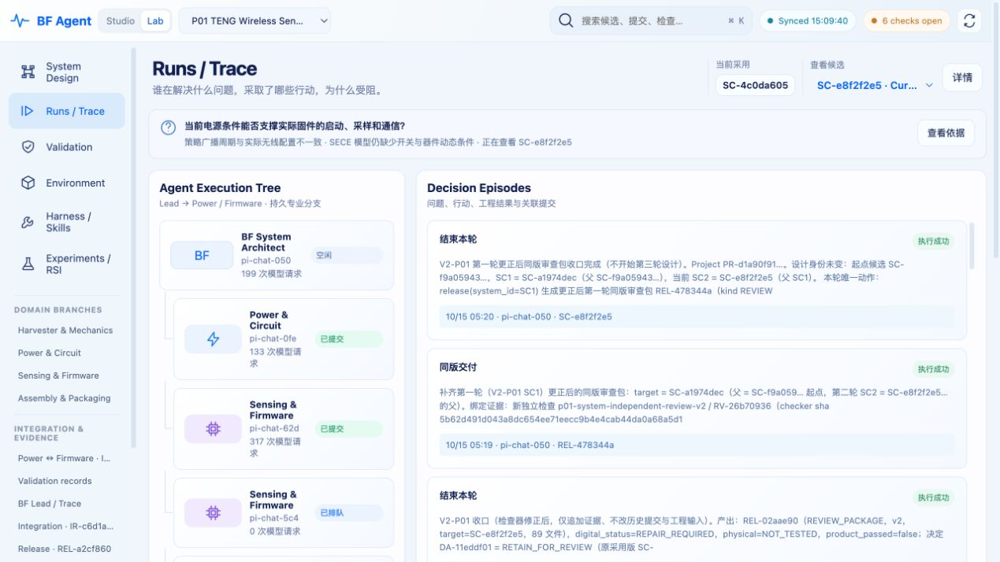
02-session-detail
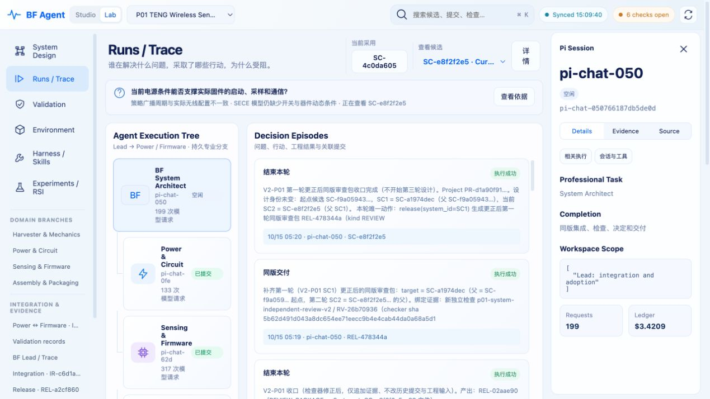
03-session-trace
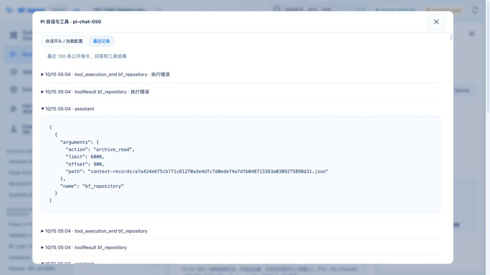
04-system
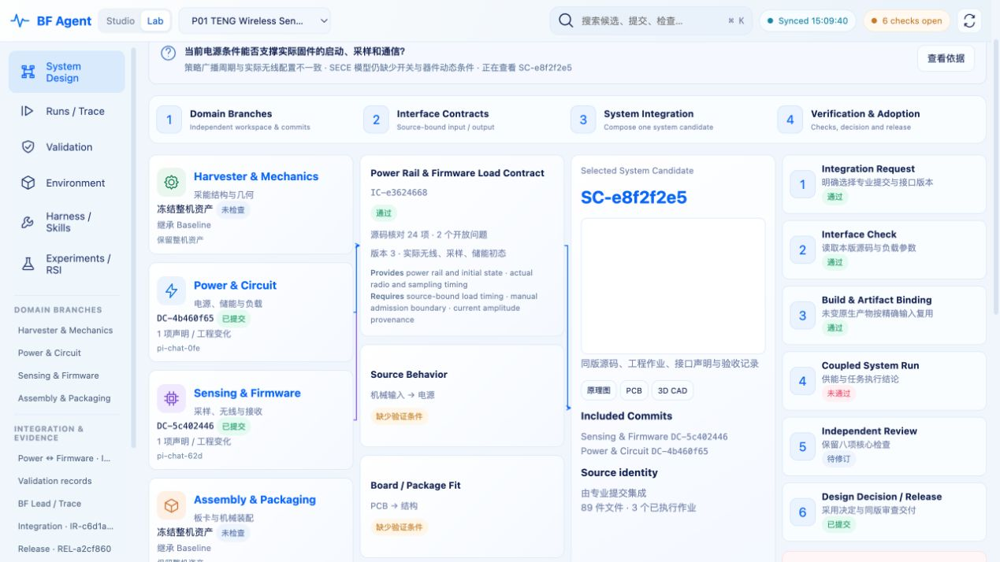
05-contract-detail
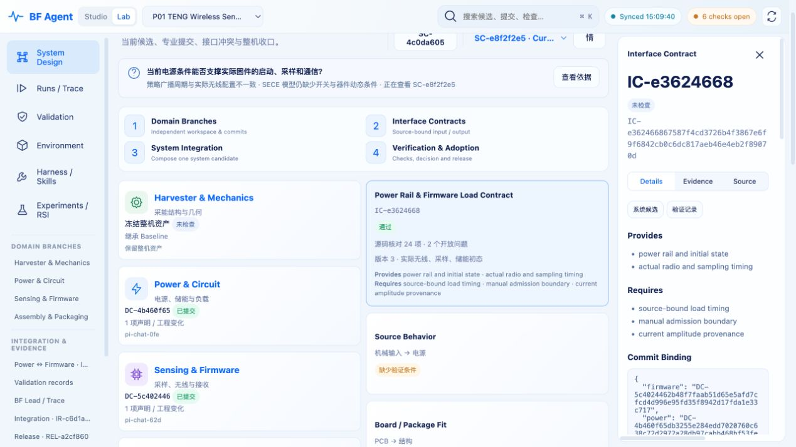
06-validation
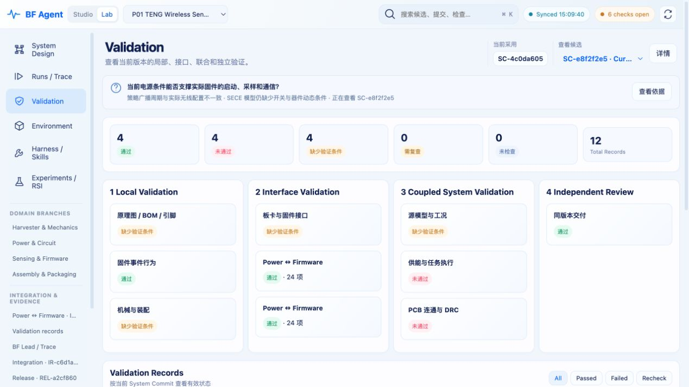
07-power-validation-detail
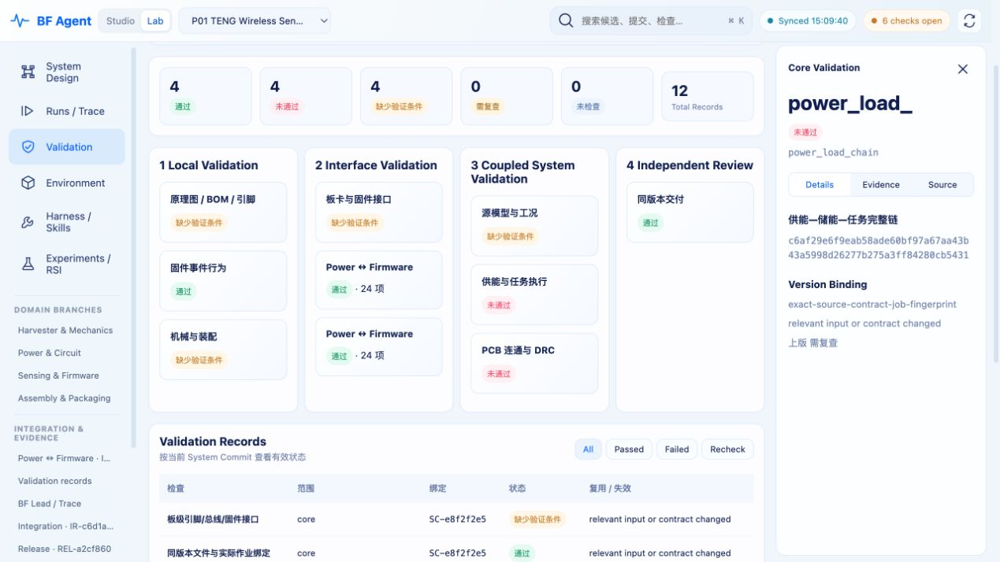
08-environment
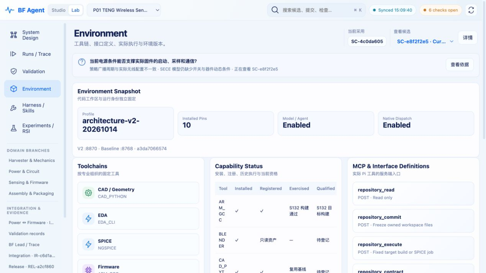
09-harness
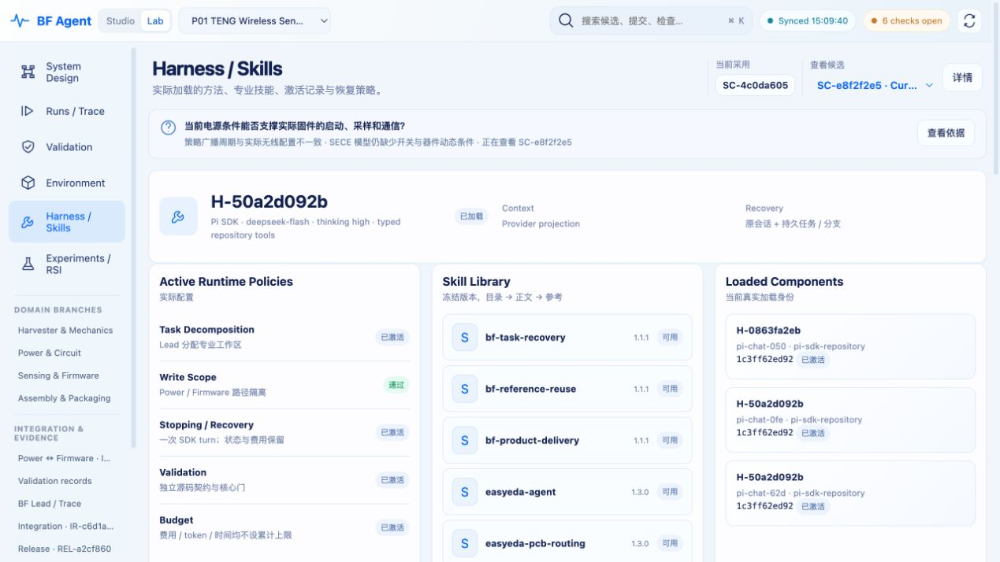
10-experiments
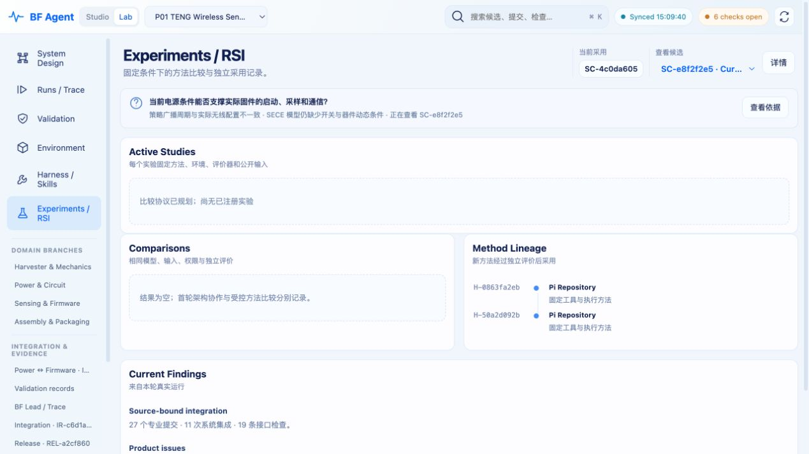
11-runs-1024
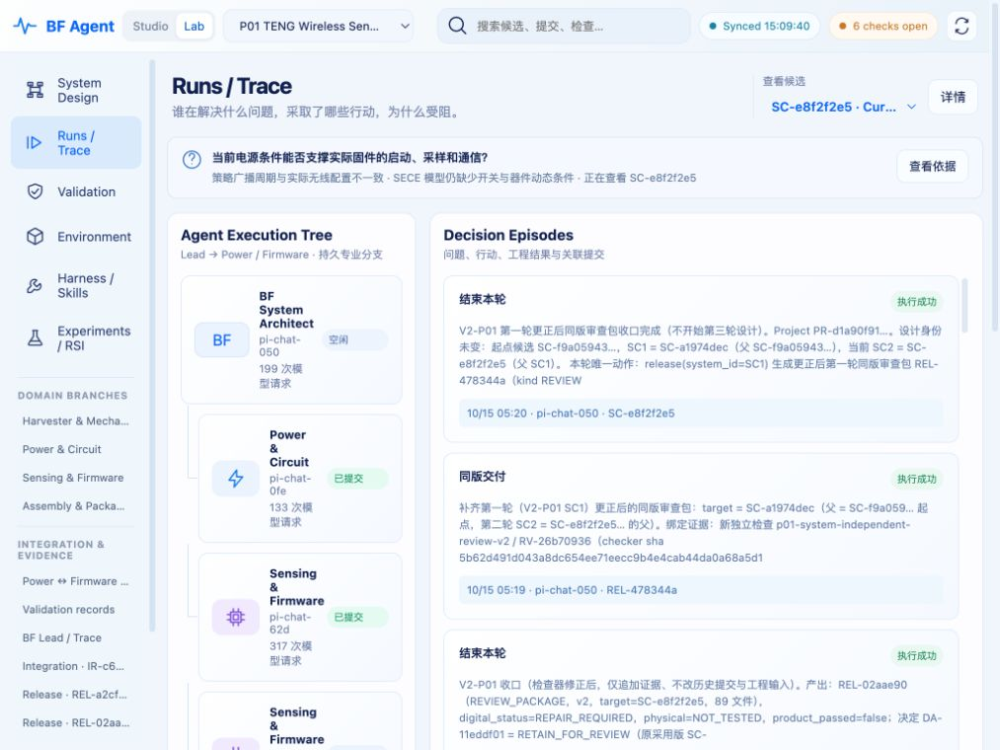
12-system-1440
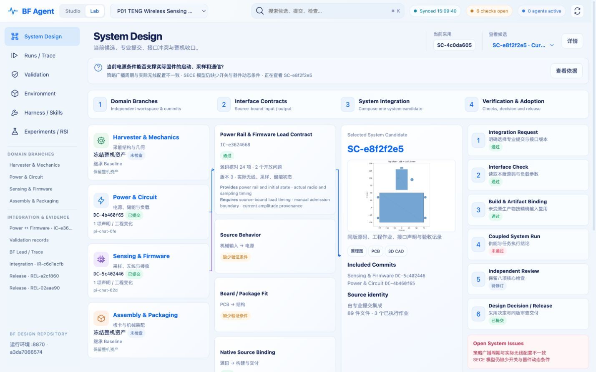
13-history-1440
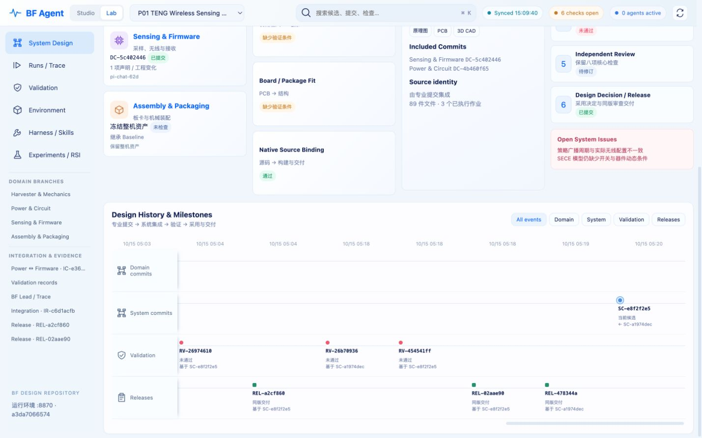
14-schematic-preview
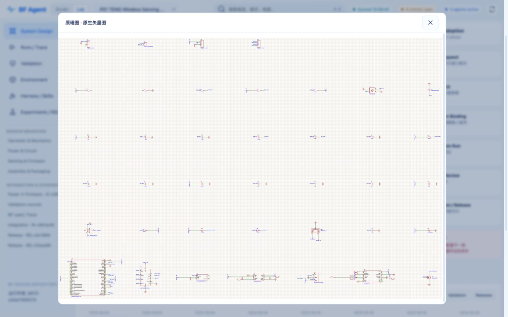
15-pcb-preview
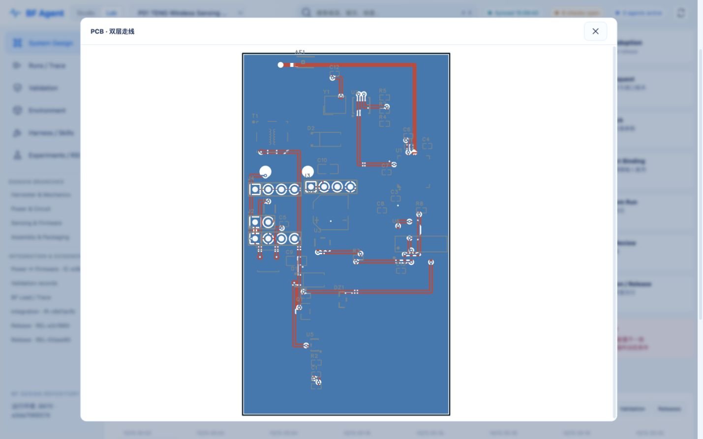
16-cad-preview
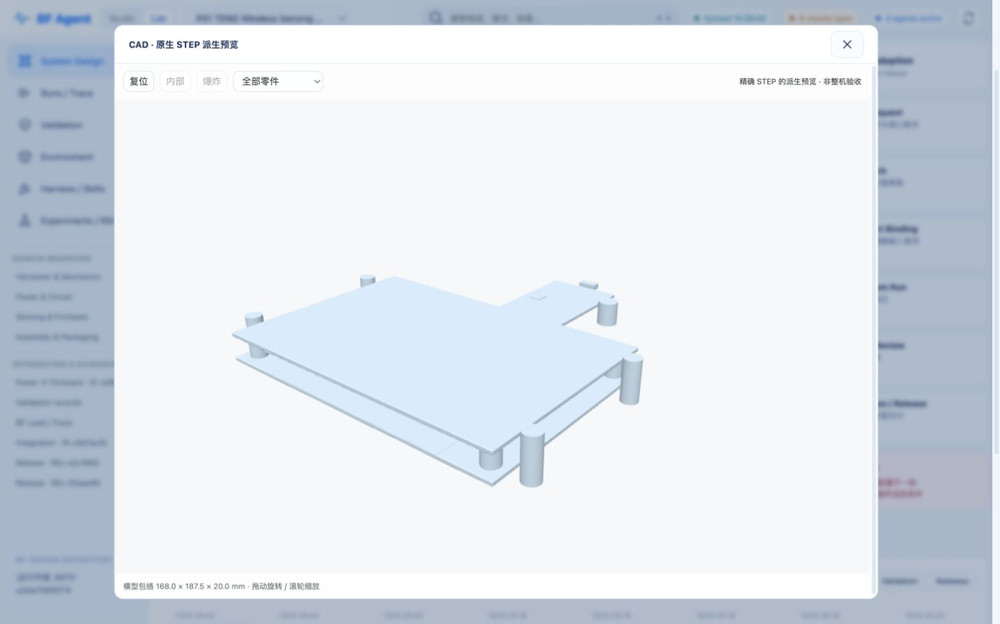